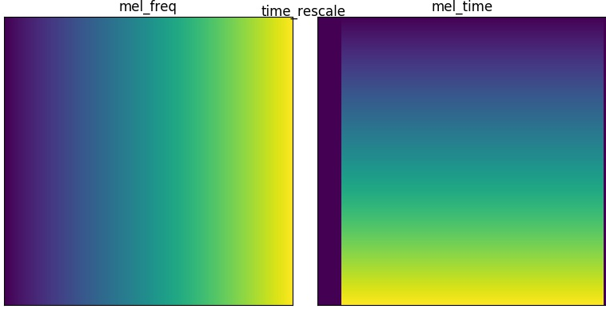
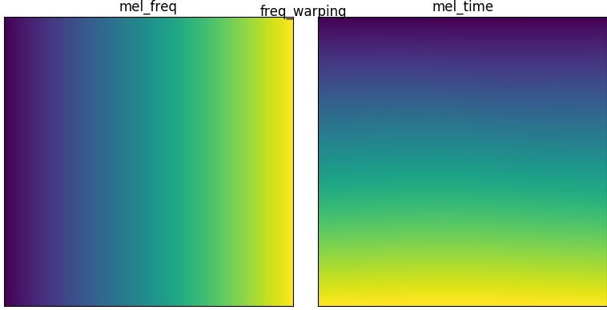
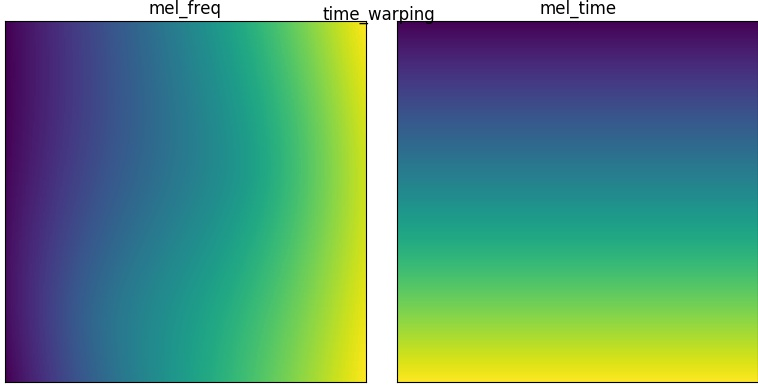
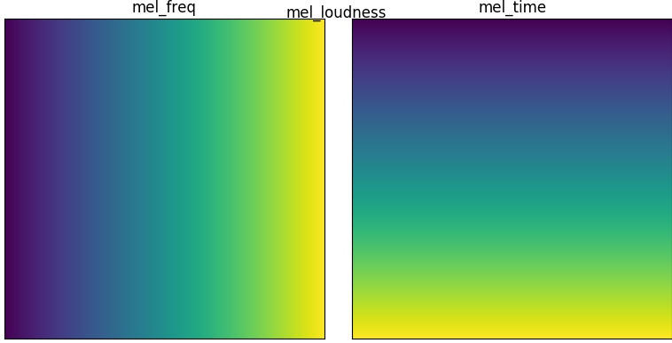
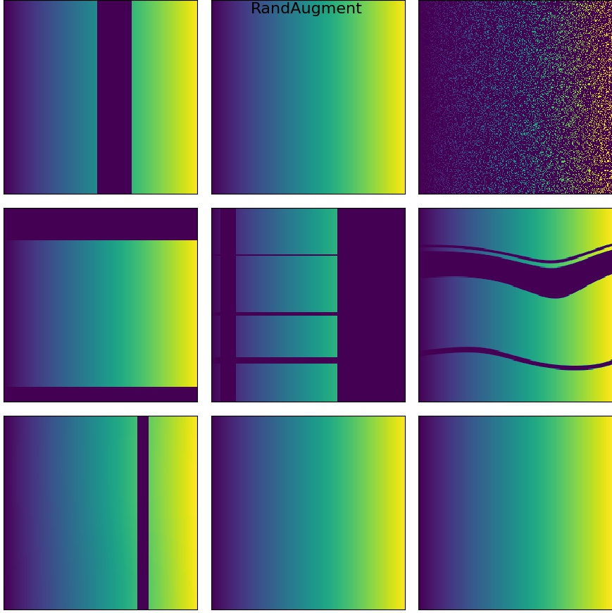

Augmentation For Mel Spectrogram
深度学习
对音频数据训练我认为还是对数Mel谱图的方式比较好一下，需要一个音频版的RandAugment，借此机会把一下Mel谱图的增强方式汇总一下。
数据增强函数
代码如下：
import tensorflow as tf
import tensorflow_addons as tfa
def power_to_db(magnitude, ref=1.0, amin=1e-10, top_db=80.0):
ref_value = tf.abs(ref)
log_spec = 10.0 * (tf.math.log(tf.maximum(amin, magnitude)) / tf.math.log(10.))
log_spec -= 10.0 * (tf.math.log(tf.maximum(amin, ref_value)) / tf.math.log(10.))
log_spec = tf.maximum(log_spec, tf.reduce_max(log_spec) - top_db)
return log_spec
def freq_mask(mel: tf.Tensor, factor: float = 0.1, times: int = 1) -> tf.Tensor:
""" mel spectogram freq mask (row mask)
Args:
mel (tf.Tensor): [freq, time] float32
factor (tf.Tensor): mask factor (0. ~ 1.)
times (int): int, default = 1
Returns:
tf.Tensor: [freq, time] float32
"""
freq_max, time_max = mel.shape
def body(idx, mel):
max_w = tf.cast(factor * tf.cast(freq_max, tf.float32) / 2, tf.int32)
coord = tf.random.uniform([], 0, freq_max, tf.int32)
mask_w = tf.random.uniform([], 0, tf.maximum(max_w, 1), tf.int32)
cut = tf.stack([coord - mask_w, coord + mask_w])
cut = tf.clip_by_value(cut, 0, freq_max)
mel = tf.concat(
[mel[:cut[0]],
tf.zeros_like(mel[cut[0]:cut[1]]), mel[cut[1]:]], 0)
return idx + 1, mel
cond = lambda idx, mel: (idx < times)
init_idx = tf.constant(0)
_, aug_mel = tf.while_loop(
cond,
body, [init_idx, mel],
shape_invariants=[init_idx.shape,
tf.TensorShape((None, time_max))])
return aug_mel
def time_mask(mel: tf.Tensor, factor: float = 0.1, times: int = 1) -> tf.Tensor:
""" mel spectogram time mask (cloum mask)
Args:
mel (tf.Tensor): [freq, time] float32
factor (tf.Tensor): mask factor (0. ~ 1.)
times (int): int, default = 1
Returns:
tf.Tensor: [freq, time] float32
"""
freq_max, time_max = mel.shape
def body(idx, mel):
max_w = tf.cast(factor * tf.cast(time_max, tf.float32) / 2, tf.int32)
coord = tf.random.uniform([], 0, time_max, tf.int32)
mask_w = tf.random.uniform([], 0, tf.maximum(max_w, 1), tf.int32)
cut = tf.stack([coord - mask_w, coord + mask_w])
cut = tf.clip_by_value(cut, 0, time_max)
mel = tf.concat(
[mel[:, :cut[0]],
tf.zeros_like(mel[:, cut[0]:cut[1]]), mel[:, cut[1]:]], 1)
return idx + 1, mel
cond = lambda idx, mel: (idx < times)
init_idx = tf.constant(0)
_, aug_mel = tf.while_loop(
cond,
body, [init_idx, mel],
shape_invariants=[init_idx.shape,
tf.TensorShape((freq_max, None))])
return aug_mel
def freq_rescale(mel: tf.Tensor, factor: float = 0.1) -> tf.Tensor:
"""rescale mel freq axis
Args:
mel (tf.Tensor): [freq, time] float32
factor (float, optional): rescle factor. Defaults to 0.1.
Returns:
tf.Tensor: [freq, time] float32
"""
freq_max, time_max = mel.shape
choosen_factor = tf.random.uniform([], 1 - factor, 1 + factor)
new_freq_size = tf.cast(
tf.cast(freq_max, tf.float32) * choosen_factor, tf.int32)
mel_aug = tf.squeeze(
tf.image.resize(tf.expand_dims(mel, -1), [new_freq_size, time_max]), -1)
def fn():
pad_offset = tf.random.uniform([], 0, freq_max - new_freq_size, tf.int32)
return tf.pad(mel_aug,
[[pad_offset, freq_max - new_freq_size - pad_offset], [0, 0]])
mel_aug = tf.cond(
choosen_factor < 1., lambda: fn(), lambda: mel_aug[0:freq_max,])
return mel_aug
def time_rescale(mel: tf.Tensor, factor: tf.Tensor = 0.1) -> tf.Tensor:
"""rescale mel time axis
Args:
mel (tf.Tensor): [freq, time] float32
factor (tf.Tensor, optional): rescle factor. Defaults to 0.1.
Returns:
tf.Tensor: [freq, time] float32
"""
freq_max, time_max = mel.shape
choosen_factor = tf.random.uniform([], 1 - factor, 1 + factor)
new_time_size = tf.cast(
tf.cast(time_max, tf.float32) * choosen_factor, tf.int32)
mel_aug = tf.squeeze(
tf.image.resize(tf.expand_dims(mel, -1), [freq_max, new_time_size]), -1)
def fn():
pad_offset = tf.random.uniform([], 0, time_max - new_time_size, tf.int32)
return tf.pad(mel_aug,
[[0, 0], [pad_offset, time_max - new_time_size - pad_offset]])
mel_aug = tf.cond(
choosen_factor < 1., lambda: fn(), lambda: mel_aug[:, 0:time_max])
return mel_aug
def mel_dropout(mel: tf.Tensor, drop_prob: int = 0.05) -> tf.Tensor:
""" mel drop out
Args:
mel (tf.Tensor): [freq, time] float32, float32
drop_prob (int, optional): keep prob. Defaults to 0.05.
Returns:
tf.Tensor: [freq, time] float32, float32
"""
return tf.nn.dropout(mel, rate=1 - drop_prob)
def time_warping(mel: tf.Tensor, factor: float = 0.1,
npoints: int = 1) -> tf.Tensor:
""" mel time warp use by `image_sparse_warp`
choice source point from `[time//4, time - time//4]`
choice warped time width from `[- factor/2 * time, factor/2 * time]`
Args:
mel (tf.Tensor): [freq, time] float32
factor (float, optional): NOTE factor should be [0., 1.]. Defaults to 0.1.
npoints (int, optional): disort point num NOTE don't set npoints > 5, it will be terrible. Defaults to 1.
Returns:
tf.Tensor: [freq, time] float32
"""
freq_max, time_max = mel.shape
freq_max = tf.cast(freq_max, tf.float32)
time_max = tf.cast(time_max, tf.float32)
# random choice some point, NOTE don't choose boundary
src_pt_y = tf.random.shuffle(tf.range(freq_max - 1) + 1)[:npoints]
tau_4 = tf.math.floordiv(time_max, 4)
src_pt_x = tf.random.shuffle(tf.range(tau_4, time_max - tau_4))[:npoints]
src_pt = tf.stack([src_pt_y, src_pt_x], -1)
disort_width = tf.random.uniform([npoints], -time_max * factor / 2,
time_max * factor / 2)
dest_pt_y = src_pt_y
dest_pt_x = src_pt_x + disort_width
dest_pt = tf.stack([dest_pt_y, dest_pt_x], -1)
# NOTE num_boundary_points=1 keep image boundary will not be disort
mel_aug, _ = tfa.image.sparse_image_warp(
mel[None, ..., None],
src_pt[None, ...],
dest_pt[None, ...],
num_boundary_points=1)
return mel_aug[0, ..., 0]
def freq_warping(mel: tf.Tensor, factor: float = 0.1,
npoints: int = 1) -> tf.Tensor:
""" mel freq warp use by `image_sparse_warp`
choice source point from `[freq//4, freq - freq//4]`
choice warped time width from `[- factor/2 * freq, factor/2 * freq]`
Args:
mel (tf.Tensor): [freq, time] float32
factor (float, optional): NOTE factor should be [0., 1.]. Defaults to 0.1.
npoints (int, optional): disort point num NOTE don't set npoints > 5, it will be terrible. Defaults to 1.
Returns:
tf.Tensor: [freq, time] float32
"""
freq_max, time_max = mel.shape
freq_max = tf.cast(freq_max, tf.float32)
# random choice some point, NOTE don't choose boundary
freq_4 = tf.math.floordiv(freq_max, 4)
src_pt_x = tf.random.shuffle(
tf.range(tf.cast(time_max, tf.float32), dtype=tf.float32))[:npoints]
src_pt_y = tf.random.shuffle(tf.range(freq_4, freq_max - freq_4))[:npoints]
src_pt = tf.stack([src_pt_y, src_pt_x], -1)
disort_width = tf.random.uniform([npoints], -freq_max * factor / 2,
freq_max * factor / 2)
dest_pt_y = src_pt_y + disort_width
dest_pt_x = src_pt_x
dest_pt = tf.stack([dest_pt_y, dest_pt_x], -1)
# NOTE num_boundary_points=1 keep image boundary will not be disort
mel_aug, _ = tfa.image.sparse_image_warp(
mel[None, ..., None],
src_pt[None, ...],
dest_pt[None, ...],
num_boundary_points=1)
return mel_aug[0, ..., 0]
def mel_loudness(mel: tf.Tensor, factor: float = 0.1) -> tf.Tensor:
""" mel spectrogram loudness control
Args:
mel (tf.Tensor): [freq, time] float32
factor (float, optional): [0. ~ 1.]. Defaults to 0.1.
Returns:
tf.Tensor: [freq, time] float32
"""
min_v = tf.reduce_min(mel)
return (mel-min_v) * tf.abs(1 - tf.random.uniform([], 0., factor)) + min_v预期效果
- freq_mask
频率维度mask

- time_mask
时间维度mask

- freq_rescale
频率维度拉伸(或缩放)
- time_rescale
时间维度拉伸(或缩放)

- freq_warping
频率维度扭曲，这里的扭曲函数用的是tensorflow addons中的，写的过程中踩了一些小坑，实现的时候我没有选择做大面积的平行变形(感觉这样对于Mel谱图太强烈)，我是选择数个点都进行随机变形(在5个点以下我认为基本是符合先验的)

- time_warping
时间维度扭曲

- mel_dropout
dropout就不说了

- mel_loudness
响度变化，减去最小值后乘上比例再加最小值。

RandAugment
代码如下,是适配tf.data的：
import tensorflow as tf
import transforms.audio.transform as ops
NAME_TO_FUNC = {
'Identity': tf.identity,
'FreqMask': ops.freq_mask,
'TimeMask': ops.time_mask,
'FreqRescale': ops.freq_rescale,
'TimeRescale': ops.time_rescale,
'FreqWarping': ops.freq_warping,
'TimeWarping': ops.time_warping,
'Dropout': ops.mel_dropout,
'Loudness': ops.mel_loudness,
}
def _ignore_level_to_arg(level):
del level
return ()
def _mask_level_to_arg(level):
# level = [0~1]
# Note factor loop in [0. ~ 0.2]
limit = tf.constant(0.2, tf.float32)
factor = tf.math.mod(level, limit)
factor = tf.cond(tf.equal(factor, 0.), lambda: limit, lambda: factor)
times = tf.cast(tf.math.floordiv(level, limit), tf.int32) + 1
return (
factor,
times,
)
def _rescale_level_to_arg(level):
# level = [0~1]
factor = level * 0.5
return (factor,)
def _warping_level_to_arg(level):
# level = [0~1]
# Note factor loop in [0. ~ 0.2]
factor = tf.math.mod(level, 0.2)
factor = tf.cond(tf.equal(factor, 0.), lambda: 0.2, lambda: factor)
npoints = tf.cast(tf.math.floordiv(level, 0.2), tf.int32) + 1
return (
factor,
npoints,
)
def _dropout_level_to_arg(level):
# level = [0~1]
drop_prob = level * 0.3
return (drop_prob,)
def _loudness_level_to_arg(level):
# level = [0~1]
factor = level * 0.4
return (factor,)
LEVEL_TO_ARG = {
'Identity': _ignore_level_to_arg,
'FreqMask': _mask_level_to_arg,
'TimeMask': _mask_level_to_arg,
'FreqRescale': _rescale_level_to_arg,
'TimeRescale': _rescale_level_to_arg,
'FreqWarping': _warping_level_to_arg,
'TimeWarping': _warping_level_to_arg,
'Dropout': _dropout_level_to_arg,
'Loudness': _loudness_level_to_arg,
}
AUG_OPS = [
'Identity',
'FreqMask',
'TimeMask',
'FreqRescale',
'TimeRescale',
'FreqWarping',
'TimeWarping',
'Dropout',
'Loudness',
]
class RandAugment(object):
"""Random augment with fixed magnitude."""
def __init__(self,
num_layers: int = 2,
prob_to_apply: float = None,
num_levels: int = 10):
"""Initialized rand augment.
Args:
num_layers (int, optional): how many times to do augmentation. Defaults to 2.
prob_to_apply (float, optional): probability to apply on each layer.
If None then always apply. Defaults to None.
num_levels (int, optional): number of levels for quantization of the magnitude. Defaults to 10.
"""
self.num_layers = num_layers
self.prob_to_apply = (
float(prob_to_apply) if prob_to_apply is not None else None)
self.num_levels = int(num_levels) if num_levels else None
def _get_level(self):
level = tf.random.uniform([], 1, self.num_levels + 1, tf.int32)
return (tf.cast(level, tf.float32) / self.num_levels)
def _apply_one_layer(self, data):
"""Applies one level of augmentation to the data."""
level = self._get_level()
branch_fns = []
for augment_op_name in AUG_OPS:
augment_fn = NAME_TO_FUNC[augment_op_name]
level_to_args_fn = LEVEL_TO_ARG[augment_op_name]
def _branch_fn(data=data,
augment_fn=augment_fn,
level_to_args_fn=level_to_args_fn):
args = [data] + list(level_to_args_fn(level))
return augment_fn(*args)
branch_fns.append(_branch_fn)
branch_index = tf.random.uniform(
shape=[], maxval=len(branch_fns), dtype=tf.int32)
aug_data = tf.switch_case(branch_index, branch_fns, default=lambda: data)
if self.prob_to_apply is not None:
return tf.cond(
tf.random.uniform(shape=[], dtype=tf.float32) <
self.prob_to_apply, lambda: aug_data, lambda: data)
else:
return aug_data
def __call__(self, data: tf.Tensor, aug_key='data') -> tf.Tensor:
output_dict = {}
org_shape = data.shape
if aug_key is not None:
aug_data = data
for _ in range(self.num_layers):
aug_data = self._apply_one_layer(aug_data)
# NOTE must set shape for while_loop !
aug_data.set_shape(org_shape)
output_dict[aug_key] = aug_data
if aug_key != 'data':
output_dict['data'] = data
return output_dict
测试效果如下,感觉好像有点夸张： 